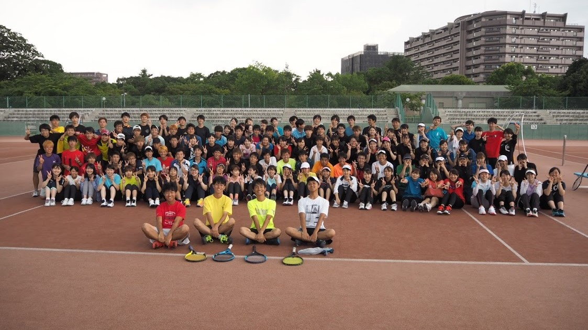

年間スケジュール
このページでは2019年4月～2020年3月にかけてWhiteLineで行われた主なイベントを紹介します！
合宿やコンパなど楽しいイベントが盛りだくさんです！
2020年4月～も同じようにイベントが組まれる予定です。
-
4月のイベント！
4月は新歓期です。ぜひWhiteLineに遊びにきてください！
新歓期のイベントについてはこちら→ 新歓イベント情報 -
5月のイベント！
第二回新歓コンパ
最後の新歓イベントです。もちろんお酒の強要はありません。安心して参加してください!
新歓合宿
WLのメンバーで行く最初の合宿です！例年一泊二日、兵庫に行きます。日中ずっとテニスするので、五月だからといって油断していると滅茶苦茶焼けます。一日目の晩御飯の後にはスタッフからの楽しい出し物も...？

-
6月のイベント！
顔合わせコンパ
メンバー確定後の最初のコンパです。参加人数も非常に多く、このコンパで初めて知り合う上回生の人も多くいると思います。いろいろな話が聞けるのでぜひ参加しましょう！
-
7月のイベント！
七夕コンパ
参加者全員が浴衣を着て行うコンパです。浴衣はレンタルするかネットなどで購入する人もいます。祇園祭りや花火大会など、浴衣を着ていける機会もあるので買っちゃってもいいかも・・・？
-
8月のイベント！
夏合宿
最大のイベントといっても過言ではありません。日中はひたすらテニス！夜は花火やBBQ、肝試しをします。去年、肝試し中河童をみたという報告が数多く寄せられました。最高の思い出になること間違いありません。雨でなくなった花火大会、今年はできるといいなあ。

-
9月のイベント！
夏乙コンパ
スタッフが夏休みの終わりに出し物をするコンパです。先輩の以外な一面が見れる機会になるかもしれません。無茶苦茶楽しいのでぜひ参加しましょう。
-
10月のイベント！
制服コンパ
制服を着て参加するコンパです。ちなみにこのコンパ、別名「ハロウィンコンパ」と言われ、制服ではなく仮装をしての参加もオッケーです。
-
11月のイベント！
NF出店
一回生が中心となり京都大学のnf(11月祭)に出店します。去年はタピオカとブリュレクレープを販売しました。2品ともかなり凝った代物でなかなかの好評。売上金で焼き肉がタダになりました。
-
12月のイベント！
部内戦
WhiteLineのメンバーで大規模な試合をします。いくつかのチームにわかれ、優勝すると豪華賞品がもらえます。
クリスマスコンパ
クリスマスを祝うコンパですが、クリスマスよりも2週間ほど早く開催されます。クリスマスに予定が入れれるようにという粋な計らいですね！...ですね。また、このコンパの前に次期スタッフの役職を決める会議があります。
-
1月のイベント！
ラストサー練
WhiteLineでは二回生がスタッフを務め、このサー練を境にスタッフが代替わりします。最初普通に練習した後、みんなで写真撮影会をします。
-
2月のイベント！
春合宿
スタッフが代替わりして初めてのイベントになります。去年度は愛媛に行ってきました。スタッフとして参加することになるのでなかなか大変ですが、充実した合宿になります！

同回旅行
同じ回生のメンバーで集まって旅行に行きます。去年度は志摩スペイン村と伊勢神宮に行きました。スタッフとしてはしゃぎきれなかった鬱憤をここで発散しましょう。調子の乗りすぎは禁物です。
-
3月のイベント！
追い出しコンパ
通称「追いコン」と呼ばれるコンパです。卒業していく4回生やM2(修士2回)に贈り物を渡したりします。お世話になった先輩が卒業するときはぜひ参加しましょう。